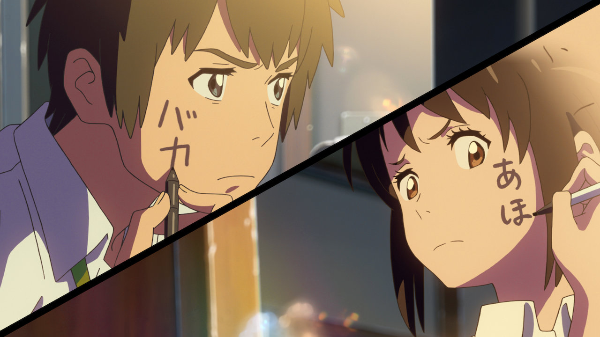

Today recommendations:
"Your name"
Trailer
The animation in 'Your Name' is stunning, so beautifully and intricately drawn with immaculate attention to detail in the backgrounds and a simply breath-taking array of ethereal but also atmospheric colours. The music fits the film's atmosphere with no problem at all and also works wonders as a soundtrack on its own, serving superbly as music on its own.Meanwhile, the script is thought-provoking and touching, with much to say and explored expertly and neatly with no heavy-handedness. The storytelling engages throughout, sucks one into its world and never lets go of the immersing and is enormously heartfelt, really investing in the characters' chemistry and their love for each other. Pacing is deliberate, but never drags due to the emotional impact and how well realised the characters are, even when noticeably slower in the second half.Characters, and the film's themes, are brilliantly written and developed, and the voice acting is emotive and fit the characters with no qualms.In summary, a truly magnificent film all round that will be remembered for years to come. Deserves all the raves it's gotten, and deserving of even more.